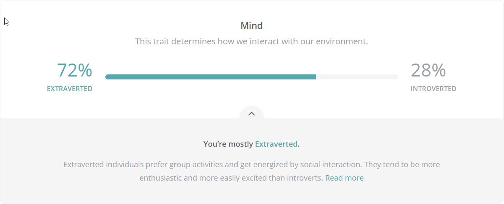
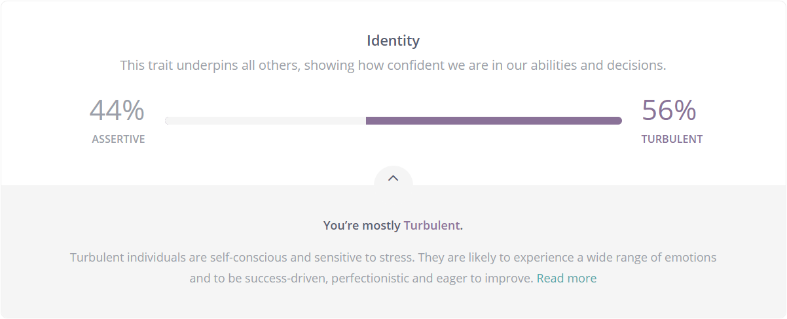
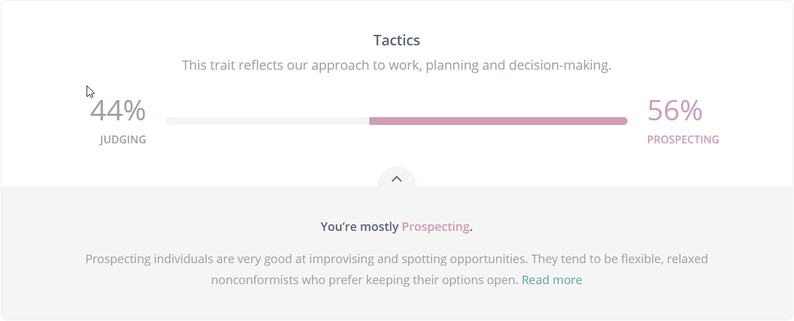
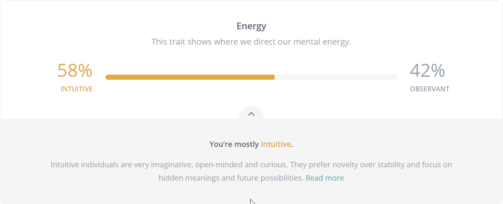
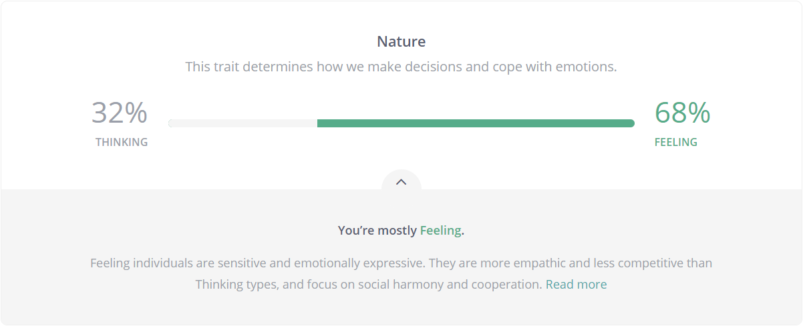

Personal Profile
* Myers Briggs Test *






* Learning Style Test *

* Creativity Test *

In this economy-based commerce, my fascination towards IT is how IT influences our society and culture and strives to improve our quality of life.
My passion towards IT started while I was building a heavy lift quadcopter, whilst IT has a broad definition, I would say that personally I’m fascinated the most by the concept of software and hardware sub-components coming together to create a new interactive interface
The wide range of applications a remote quadcopter can bring to the table greatly influenced my decision in choosing a career path, for example
And, the new ways an unmanned-air-vehicle (UAV) application making head ways into practically all industry sectors everyday
I’ve chosen to study at RMIT amongst all of the other universities, well for one, it has fantastic reviews from many other such like-minded people as me which made me more confident that I can find myself doing what I love in the near future. And, because I live in Australia and I felt it was best for me to be studying my passion and work towards my goal right from where I’m already well established.
Though my interests are very wide-ranging in IT, during a study at RMIT I would want to understand and learn what it takes to build IT systems and applications with a compelling user experience.
More specifically, good object-oriented programming skills, data management, and reporting, helping me to establish aIT foundation based on fundamentals and best practices.
A community-based Real Estate property management website will be hosted for all residents of Victoria, Australia. All resident owners who either want to buy sell or rent are encouraged to become members and register their interest to buy or rent immediately or at a future date
The primary purpose is to allow the first opportunity to all members of the local community who have shown expressed interest to buy or rent a property will be notified via email of the availability.
The eligible community members will also provide professional services like settlement of sale, rental contracts, property inspections etc. for a fee.
On average, there are 10,600 house transfers every quarter in Victoria, Australia alone, per data published by the Australian Institute of Health and Welfare on behalf of the Australian Bureau of Statistics (ABS) since March-2002 to Dec-2020.
It is expensive and time-consuming for homeowners to sell or rent out their properties involving a lot of legal and other procedural nitty-gritty, if an opportunity is available for homeowners to first try within the close/surrounding community members this will greatly help to integrate the community members and also save money in the process.
Even for 1% of the community members, a service like this will provide a fair initial opportunity to the community members to save on real estate commission and other associated costs and it will be interesting to see how the community integrates with other community members given that Australia is a land of the diverse population from different countries and cultural backgrounds, because in terms of cost savings it’s a win-win to both parties involved.
This community service has a lot of scope to further enhance and introduce more services and monetise, for example:
Community Real Estate Management Services (CREMS) will be a responsive website with the following modules and business processes. The description below for each module is not comprehensive and must be elaborated on with details and specifics.
All data captured relating to users and their properties must be captured in a relational database with data validations to be elaborated.
The "About Us" module is a static responsive static web page, describing the purpose and motivation of this service with images and narrative as applicable
This module will only be accessible to the site administrator and captures valid Victorian suburbs. The administrator will capture only those suburbs whose residents are eligible to become members.
Member registration module allows users to register themselves by providing personal information and a valid email address.
The user wanting to register must be residing in one of the Suburbs captured in the Suburb module. Personal information to be collected is the name, full present address per Australian standard, valid email address, and phone number. Will also allow users to choose a secure password per standard.
Upon providing the above information by the user, an email will be sent to the member email for confirmation, and a second email for successful registration will be sent to the user.
Registered members will be able to capture and upload property details. Along with a valid property address and a maximum 1000 words property description, this module will capture other details as shown in the below picture.
User should be able to add multiple properties along with a maximum of 10 images, each image is to be a max of 10 MB in size and allowed image formats are jpeg and png.
User should be able to edit and delete properties and finally allowed to completion upon which an email with property details should be sent for reference and information and only then the property is visible to all other community members and an informational email is sent to all community members
User should be able to generate a report of all their properties as HTML to be printed to a printer or in a PDF formatted document.
Once the property is to be pulled off the market after a successful transaction or otherwise, the member should be able to delete the property or the property will automatically be marked as inactive and will not be visible to users
Upon successful deactivation, an automated email is sent to the owners and users for informational purposes
After a successful sale or rental, an automated email will be sent to both parties involved to capture responses for
The above information will be used for future improvements to the community service
As required by a standard responsive website the hardware required will be a PC with 2 GHz processor speed, 8GB RAM with at least 1 TB disk space should suffice
As a community project only Open source software and tools are to be used, software tools required will be for
| Purpose | Tools |
|---|---|
| Project Management | Any web-based open source task tracking tool |
| Requirements Management | Google docs and Sheets or any other templates available for free |
| Development | VS Code IDE, HTML, CSS, JavaScript, any Open source HTML and CSS template designers, Python/Django for backend development |
| Source Code Control | GitHub Client |
| Web Server | Apache |
| Database Management | MySQL, PostgreSQL or any other open-source relational database management |
Upon successfully commissioning the service, the community members will have an initial opportunity to collaborate within the community and share home buying and renting experiences before they go for professional services organizations to buy, sell, or rent their properties
Feedback showing a more tightly knit community with a potential savings of thousands of dollars